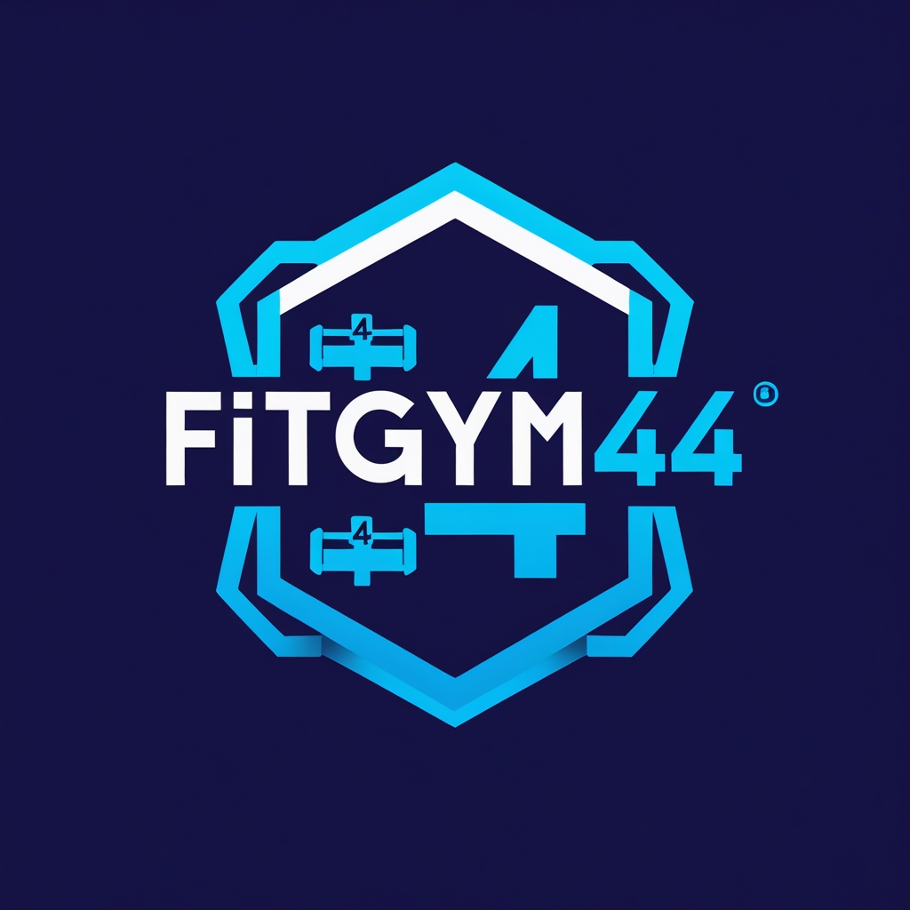

A university software engineering project built entirely around rigour — 5 structured deliverables, formal UML and OCL modelling, and Agile team leadership. The product was secondary. The process was the point.
View RepositoryA fitness app specification complex enough to span 9 architectural modules, 30+ requirements, and formal OCL constraints demanded a wide range of engineering competencies — applied under real team dynamics and a hard deadline.
Led a 3-person team through a Scrum-based workflow — sprint planning, weekly standups, task allocation by competency, and adaptive meeting formats. Owned every deliverable from first draft to final sign-off.
Primary author of D1 — structured 30+ functional requirements and a full set of non-functional requirements from scratch, in precise natural language, ensuring completeness and internal consistency before any UML work began.
Specified the full system in UML across D2 and D3: use case diagrams, activity diagrams per flow, system context diagram, component diagram, and a 9-module class diagram covering every architectural boundary.
Encoded all business logic not expressible in standard UML as OCL constraints — formally capturing invariants, pre/post-conditions, and rules across the entire domain model to eliminate implementation ambiguity.
Designed a multi-module architecture spanning authentication, training, diet, payments, notifications, calendar, and database layers — specifying inter-module relationships and data flows before any code was written.
Formally specified all third-party integration points: Bluetooth wearable APIs for step tracking, payment gateways for the premium tier, mail services, and event-driven notification pipelines — all within the system model.
Documented every major user journey — onboarding, workout scheduling, payment upgrade, achievement unlocking — as UML activity diagrams, before any implementation work started.
Authored and cross-reviewed 135+ pages of structured technical documentation across five deliverables and three authors — maintaining consistency, coherence, and a single unified system design throughout.
Every feature, class, constraint, and user flow was written down before a single line of code was written. The deliverables are the project — the code is a consequence of them.
Defined 30+ functional requirements and a full set of non-functional requirements in natural language. Established project objectives, front-end and back-end design direction, and hi-fi UI mockups built in Figma.
Formalised every requirement using UML — use case diagrams and activity diagrams for each flow, structured RNF tables, a system context diagram, and a full component diagram defining all architectural boundaries.
Full UML class diagram across 9 architectural modules — User & Credentials, Achievements, Training, Dieting, Payments, Mails, Notifications, Calendar, and Database — with OCL constraints formally encoding all business logic and invariants.
User flow diagrams and UML specifications for all major journeys — onboarding, workout scheduling, payments, achievements. Followed by the working implementation: backend API, database, frontend build, and structured testing.
Project retrospective covering team organisation, individual roles and time distribution, critical issues encountered, and self-evaluation. Also includes reflections from 10 industry seminars — IBM, Meta, RedHat, Microsoft, APSS, and more.
As project lead, I contributed ~300 hours — the highest individual contribution on the team — owning requirements definition, UML specification, architecture documentation, and end-to-end deliverable review.
Led all team activities across sprints — task allocation, weekly standup meetings, issue resolution, and deliverable sign-off. Adapted meeting format to context: in-person when alignment was needed, online for regular check-ins, async when the team could work independently.
Primary author of D1 — defined 30+ functional requirements and all non-functional requirements in natural language, from project objectives to detailed specs, ensuring completeness and internal consistency throughout.
Authored use case descriptions and activity diagrams for all major requirements, designed the system component diagram, produced the structured RNF tables, and built the context diagram defining system boundaries.
Wrote class descriptions across all 9 architecture modules and authored the full set of OCL constraints — formally encoding all business logic and invariants not expressible in standard UML, eliminating implementation ambiguity.
Designed and documented UML user flow diagrams for all major journeys — onboarding, workout selection, payment upgrade, and achievement unlocking — before any development work began.
Personally reviewed every deliverable before submission — checking for consistency, coherence, and completeness across all five documents, ensuring the full specification held together as a single unified system design.
The team followed a Scrum-inspired Agile methodology with weekly iterative reviews — adapting meeting formats and coordination style to what each sprint actually required, not a fixed template.
Scrum-inspired Agile with weekly standup meetings to track deliverable progress, surface blockers early, and keep all three team members aligned.
Iterative delivery — each deliverable built incrementally, with the ability to retroactively fix earlier decisions when inconsistencies surfaced downstream.
Adaptive meetings — in-person when structural decisions required full alignment, online for regular standups, fully async when everyone had clear independent tasks to complete.
Competency-based task allocation — development and backend work delegated to technically stronger members; specification, architecture, and documentation led by the project lead.
Specification before code — three full deliverables (D1, D2, D3) completed before any implementation began, eliminating ambiguity and reducing rework during development.
Trello Kanban for backlog — tasks, sprint goals, and to-do lists maintained in Trello for team-wide visibility and WIP discipline, preventing over-allocation.
UML as the shared language — all requirements formalised in UML so every team member — regardless of role — could read and validate the specification without interpretive gaps.
OCL for business logic — constraints not expressible in UML encoded formally in OCL, creating a precise, unambiguous bridge from specification to implementation.
Tools used
A 28/30 final grade backed by 800+ team hours, five detailed technical documents, and a fully specified product architecture ready for any engineering team to implement.